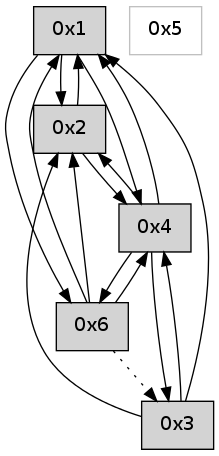

>> << IDX [start] -100 -25 -5 +0 +5 +25 +100 [540.002246141]
 Previous packets
----------------------------------------------------------------------
535.071208 beacon01(adaf) #0 coord=01,02,05,03,04,06 cycle=432.0ms assoc
-- color-indic=0 64 b1 0a
535.081170 beacon02(adaf) #0 coord=01,02,05,03,04,06 cycle=432.0ms assoc 64 e0 f5
535.091169 beacon05(adaf) #0 coord=01,02,05,03,04,06 cycle=432.0ms assoc 64 46 df
535.101170 beacon03(adaf) #0 coord=01,02,05,03,04,06 cycle=432.0ms assoc 64 da fb
535.111169 beacon04(adaf) #0 coord=01,02,05,03,04,06 cycle=432.0ms assoc 64 7c d1
535.121170 beacon06(adaf) #0 coord=01,02,05,03,04,06 cycle=432.0ms assoc 64 08 cd
----------------------------------------------------------------------
535.563315 beacon01(adaf) #0 coord=01,02,05,03,04,06 cycle=432.0ms assoc
-- color-indic=0 64 fc 0d
535.573276 beacon02(adaf) #0 coord=01,02,05,03,04,06 cycle=432.0ms assoc 64 ad f2
535.583276 beacon05(adaf) #0 coord=01,02,05,03,04,06 cycle=432.0ms assoc 64 0b d8
535.593277 beacon03(adaf) #0 coord=01,02,05,03,04,06 cycle=432.0ms assoc 64 97 fc
535.603277 beacon04(adaf) #0 coord=01,02,05,03,04,06 cycle=432.0ms assoc 64 31 d6
535.613278 beacon06(adaf) #0 coord=01,02,05,03,04,06 cycle=432.0ms assoc 64 45 ca
535.624737 [Hello(1): seq=234 sym=2,6,3,4 sysInfo= stat=2:15,0,0,0/6:14,0,0,0/3:6,0,0,0/4:3,0,0,0]
535.628595 [Hello(4): seq=335 sym=6,3,1,2 sysInfo= stat=6:6,0,0,0/3:0,0,0,0/1:14,0,0,0/2:0,0,0,0]
----------------------------------------------------------------------
536.055423 beacon01(adaf) #0 coord=01,02,05,03,04,06 cycle=432.0ms assoc
-- color-indic=0 64 38 62
536.065383 beacon02(adaf) #0 coord=01,02,05,03,04,06 cycle=432.0ms assoc 64 69 9d
536.075386 beacon05(adaf) #0 coord=01,02,05,03,04,06 cycle=432.0ms assoc 64 cf b7
536.085384 beacon03(adaf) #0 coord=01,02,05,03,04,06 cycle=432.0ms assoc 64 53 93
536.095385 beacon04(adaf) #0 coord=01,02,05,03,04,06 cycle=432.0ms assoc 64 f5 b9
536.105385 beacon06(adaf) #0 coord=01,02,05,03,04,06 cycle=432.0ms assoc 64 81 a5
----------------------------------------------------------------------
536.547530 beacon01(adaf) #0 coord=01,02,05,03,04,06 cycle=432.0ms assoc
-- color-indic=0 64 74 d2
536.557492 beacon02(adaf) #0 coord=01,02,05,03,04,06 cycle=432.0ms assoc 64 25 2d
536.567490 beacon05(adaf) #0 coord=01,02,05,03,04,06 cycle=432.0ms assoc 64 83 07
536.577493 beacon03(adaf) #0 coord=01,02,05,03,04,06 cycle=432.0ms assoc 64 1f 23
536.587492 beacon04(adaf) #0 coord=01,02,05,03,04,06 cycle=432.0ms assoc 64 b9 09
536.597492 beacon06(adaf) #0 coord=01,02,05,03,04,06 cycle=432.0ms assoc 64 cd 15
536.608611 [Hello(1): seq=235 sym=2,6,3,4 sysInfo= stat=2:0,0,0,0/6:14,0,0,0/3:6,0,0,0/4:4,0,0,0]
536.612808 [Hello(4): seq=336 sym=6,3,1,2 sysInfo= stat=6:6,0,0,0/3:1,0,0,0/1:14,0,0,0/2:0,0,0,0]
----------------------------------------------------------------------
537.039638 beacon01(adaf) #0 coord=01,02,05,03,04,06 cycle=432.0ms assoc
-- color-indic=0 64 b0 bd
537.049598 beacon02(adaf) #0 coord=01,02,05,03,04,06 cycle=432.0ms assoc 64 e1 42
537.059600 beacon05(adaf) #0 coord=01,02,05,03,04,06 cycle=432.0ms assoc 64 47 68
537.069598 beacon03(adaf) #0 coord=01,02,05,03,04,06 cycle=432.0ms assoc 64 db 4c
537.079601 beacon04(adaf) #0 coord=01,02,05,03,04,06 cycle=432.0ms assoc 64 7d 66
537.089600 beacon06(adaf) #0 coord=01,02,05,03,04,06 cycle=432.0ms assoc 64 09 7a
----------------------------------------------------------------------
537.531746 beacon01(adaf) #0 coord=01,02,05,03,04,06 cycle=432.0ms assoc
-- color-indic=0 64 95 80
537.541707 beacon02(adaf) #0 coord=01,02,05,03,04,06 cycle=432.0ms assoc 64 c4 7f
537.551707 beacon05(adaf) #0 coord=01,02,05,03,04,06 cycle=432.0ms assoc 64 62 55
537.561707 beacon03(adaf) #0 coord=01,02,05,03,04,06 cycle=432.0ms assoc 64 fe 71
537.571707 beacon04(adaf) #0 coord=01,02,05,03,04,06 cycle=432.0ms assoc 64 58 5b
537.581708 beacon06(adaf) #0 coord=01,02,05,03,04,06 cycle=432.0ms assoc 64 2c 47
537.593375 [Hello(4): seq=337 sym=3,1,2 sysInfo= stat=3:1,0,0,0/1:14,0,0,0/2:0,0,0,0]
537.596823 [Hello(1): seq=236 sym=2,6,4 sysInfo= stat=2:1,0,0,0/6:14,0,0,0/4:5,0,0,0]
----------------------------------------------------------------------
538.023854 beacon01(adaf) #0 coord=01,02,05,03,04,06 cycle=432.0ms assoc
-- color-indic=0 64 51 ef
538.033815 beacon02(adaf) #0 coord=01,02,05,03,04,06 cycle=432.0ms assoc 64 00 10
538.043815 beacon05(adaf) #0 coord=01,02,05,03,04,06 cycle=432.0ms assoc 64 a6 3a
538.053816 beacon03(adaf) #0 coord=01,02,05,03,04,06 cycle=432.0ms assoc 64 3a 1e
538.063815 beacon04(adaf) #0 coord=01,02,05,03,04,06 cycle=432.0ms assoc 64 9c 34
538.073817 beacon06(adaf) #0 coord=01,02,05,03,04,06 cycle=432.0ms assoc 64 e8 28
538.085484 [Hello(2): seq=832 sym=4,1 sysInfo= stat=4:8,0,0,0/1:2,0,0,0]
538.089190 [Hello(3): seq=337 sym=4,1,2 sysInfo= stat=4:1,0,0,0/1:7,0,0,0/2:0,0,0,0]
----------------------------------------------------------------------
538.515961 beacon01(adaf) #0 coord=01,02,05,03,04,06 cycle=432.0ms assoc
-- color-indic=0 64 1d 5f
538.525922 beacon02(adaf) #0 coord=01,02,05,03,04,06 cycle=432.0ms assoc 64 4c a0
538.535922 beacon05(adaf) #0 coord=01,02,05,03,04,06 cycle=432.0ms assoc 64 ea 8a
538.545922 beacon03(adaf) #0 coord=01,02,05,03,04,06 cycle=432.0ms assoc 64 76 ae
538.555923 beacon04(adaf) #0 coord=01,02,05,03,04,06 cycle=432.0ms assoc 64 d0 84
538.565923 beacon06(adaf) #0 coord=01,02,05,03,04,06 cycle=432.0ms assoc 64 a4 98
538.577027 [Hello(1): seq=237 sym=2,6,4 sysInfo= stat=2:2,0,0,0/6:14,0,0,0/4:5,0,0,0]
538.581252 [Hello(4): seq=338 sym=6,3,1,2 sysInfo= stat=6:0,0,0,0/3:2,0,0,0/1:15,0,0,0/2:0,0,0,0]
----------------------------------------------------------------------
539.008069 beacon01(adaf) #0 coord=01,02,05,03,04,06 cycle=432.0ms assoc
-- color-indic=0 64 d9 30
539.018029 beacon02(adaf) #0 coord=01,02,05,03,04,06 cycle=432.0ms assoc 64 88 cf
539.028029 beacon05(adaf) #0 coord=01,02,05,03,04,06 cycle=432.0ms assoc 64 2e e5
539.038032 beacon03(adaf) #0 coord=01,02,05,03,04,06 cycle=432.0ms assoc 64 b2 c1
539.048030 beacon04(adaf) #0 coord=01,02,05,03,04,06 cycle=432.0ms assoc 64 14 eb
539.058031 beacon06(adaf) #0 coord=01,02,05,03,04,06 cycle=432.0ms assoc 64 60 f7
539.073409 [Hello(6): seq=253 sym=4,1,2 asym=3 sysInfo= stat=4:10,0,0,0/1:11,0,0,0/2:10,0,0,0/3:0,0,0,0]
----------------------------------------------------------------------
539.500176 beacon01(adaf) #0 coord=01,02,05,03,04,06 cycle=432.0ms assoc
-- color-indic=0 64 94 37
539.510137 beacon02(adaf) #0 coord=01,02,05,03,04,06 cycle=432.0ms assoc 64 c5 c8
539.520137 beacon05(adaf) #0 coord=01,02,05,03,04,06 cycle=432.0ms assoc 64 63 e2
539.530138 beacon03(adaf) #0 coord=01,02,05,03,04,06 cycle=432.0ms assoc 64 ff c6
539.540138 beacon04(adaf) #0 coord=01,02,05,03,04,06 cycle=432.0ms assoc 64 59 ec
539.550138 beacon06(adaf) #0 coord=01,02,05,03,04,06 cycle=432.0ms assoc 64 2d f0
539.561822 [Hello(4): seq=339 sym=6,3,1,2 sysInfo= stat=6:1,0,0,0/3:3,0,0,0/1:15,0,0,0/2:0,0,0,0]
539.563591 [Hello(1): seq=238 sym=2,6,4 sysInfo= stat=2:3,0,0,0/6:15,0,0,0/4:6,0,0,0]
----------------------------------------------------------------------
539.992284 beacon01(adaf) #0 coord=01,02,05,03,04,06 cycle=432.0ms assoc
-- color-indic=0 64 50 58